courses taught
Bachelor Seminars >
-
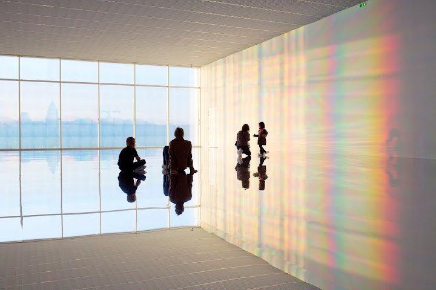
Studies in the Contemporary Art of East Asia: Challenges and Approaches
> Spring 2020
Image: Kimsooja, To Breathe, 2015 -
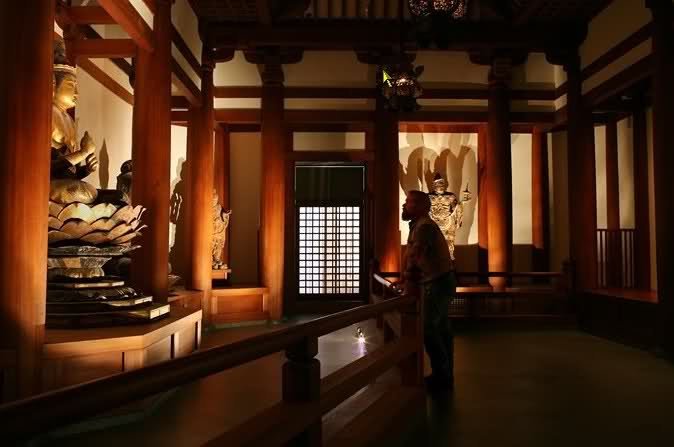
Art and Ritual in East Asia
> Spring 2018
Image: Buddhist Temple Room at the Museum of Fine Arts, Boston -
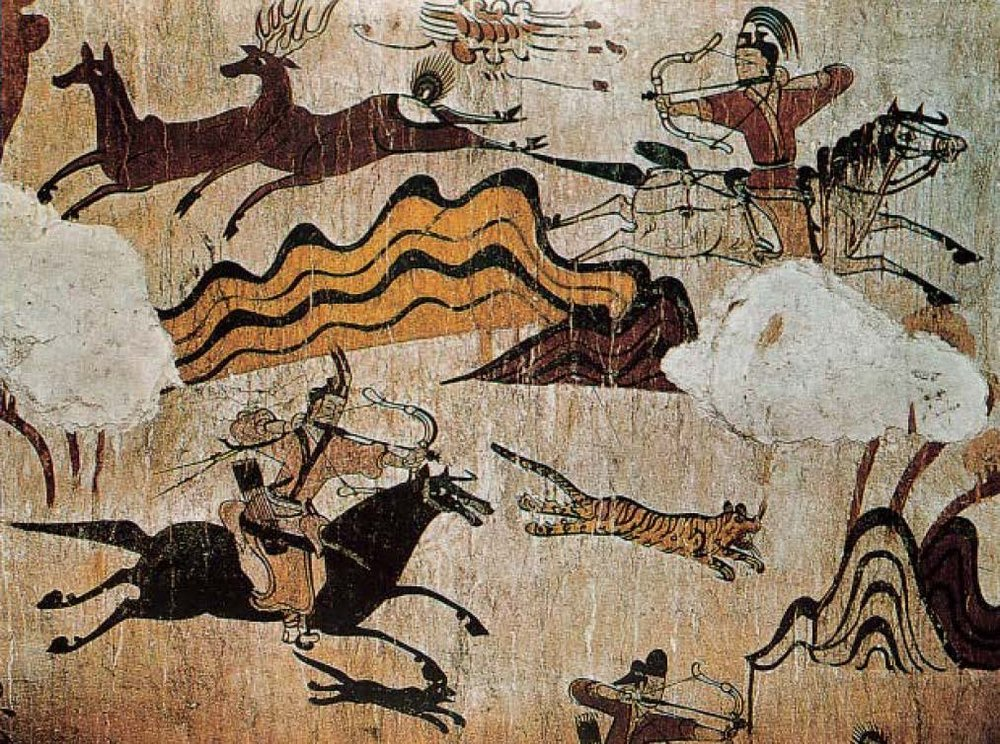
Burial Art of China and Korea
> Spring 2016
Image: Hunting scene from a mural in the Tomb of the Dancers (Muyongchong), Goguryeo, 5th century CE
Introductory Courses >
-
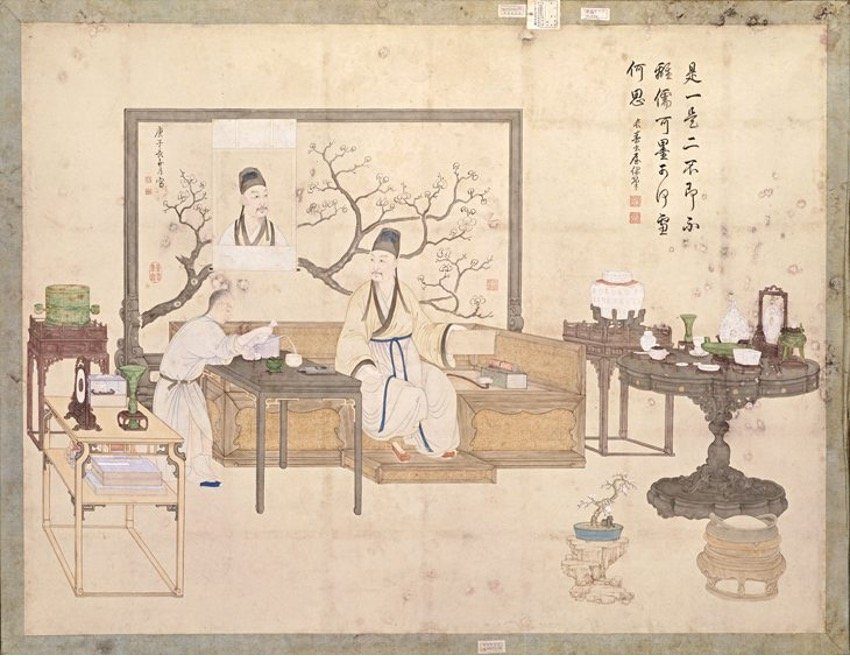
Foundations of East Asian Art History
> Autumn 2019, 2020, 2021
Co-teaching, my topics: architecture, jade, metalwork, ceramics, lacquer, small carvings
Image: Anonymous court artist, One or Two? The Qianlong Emperor Studying Antiquities, Qing dynasty, Qianlong period, National Palace Museum, Beijing -
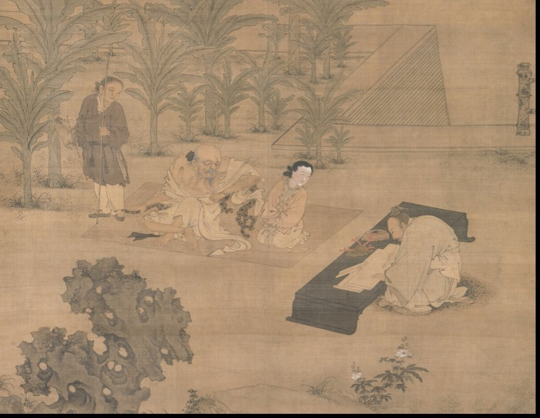
Methodologies and Resources in East Asian Art History
> Autumn 2017, 2018, 2019, 2020, 2021
Image (cropped): Du Jin 杜堇 (active ca. 1465–1509), The Scholar Fu Sheng Transmitting the Book of Documents, hanging scroll, ink and colour on silk, Ming dynasty (1368–1644), Metropolitan Museum of Art -
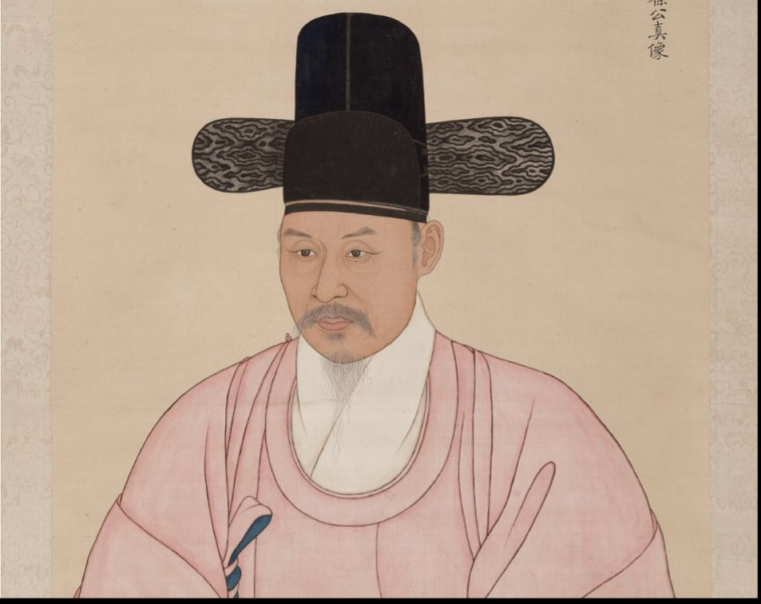
Introduction to Korean Art
> Autumn 2017 & Spring 2019
Image (cropped): Portrait of Seo Heon-soon, hanging scroll, ink and colour on paper, Joseon dynasty, Historical and Ethnographical Museum of St. Gallen -
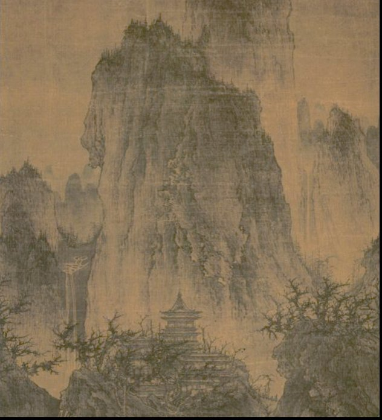
Introduction to Chinese Painting
> Spring 2017
Co-teaching, my topics: Early painting, Paleolithic to the Song dynasty
Image (cropped): Li Cheng, A Solitary Temple amid Clearing Peaks, hanging scroll, ink on silk, ca. 960 CE, Nelson-Atkins Museum of Art -
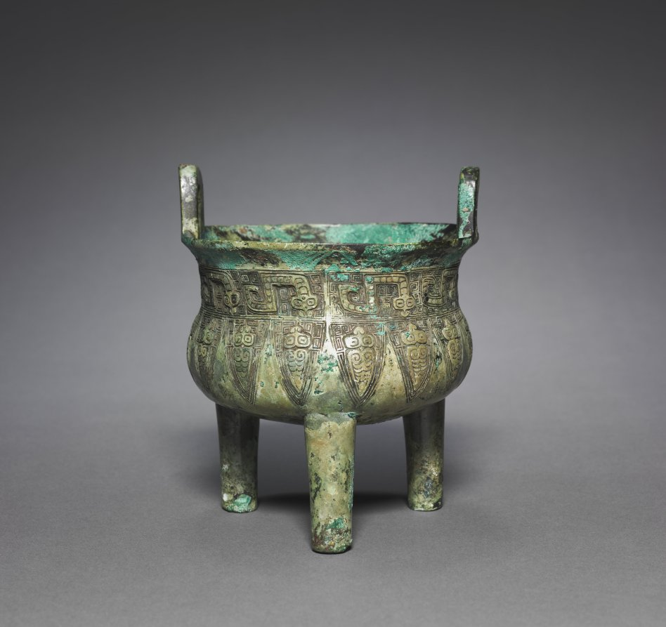
Chinese Bronzes: Embodying Ritual and Power in Early China
> Autumn 2015
Image: Tripod cauldron (ding 鼎), bronze, Shang dynasty, ca. 1200–1100 BCE (Anyang phase), Cleveland Museum of Art -
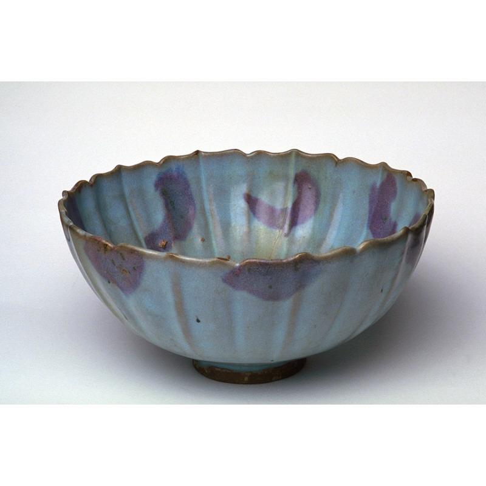
Chinese Ceramics from the Prehistoric till Today
> Spring 2014
Image: Fluted bowl, Jin/Yuan dynasty, 13th–14th century, stoneware with splashed blue glaze, Asian Art Museum
Practical Courses >
-
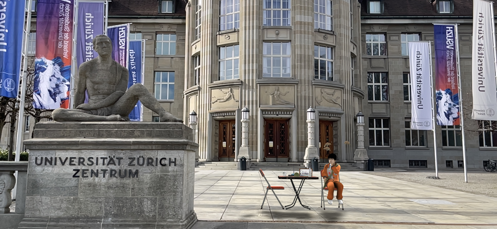
East Asian Art (History) in the Digital Age
> Spring 2021
Guest speakers: Claire Hsu, Co-Founder and former Executive Director of the Asia Art Archive; Alexandra von Przychowski, Curator of Chinese Art, Museum Rietberg; Dr. Susanne Pollack, Curator, ETH Collection of Prints and Drawings.
Image: Cao Fei, The Eternal Wave AR: Li Nova, captured in the Acute Art mobile app in front of the University of Zurich main building, 22.02.2021 -
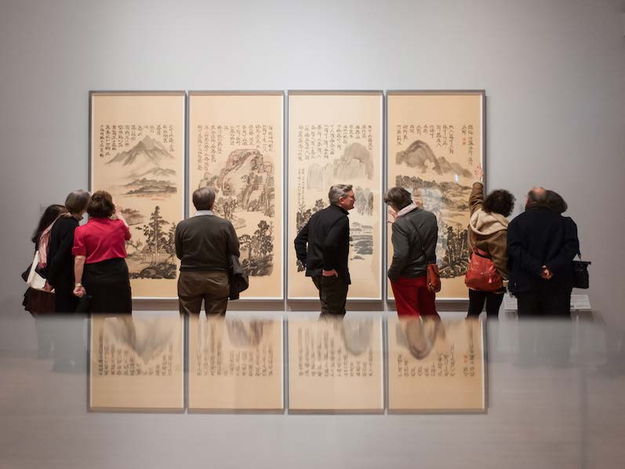
Critical Approaches to Curating and Exhibiting East Asian [Art] Objects
> Spring 2018
Co-teaching
Image: Ashmolean Museum Chinese Art Collection, photo credit John Cairns -
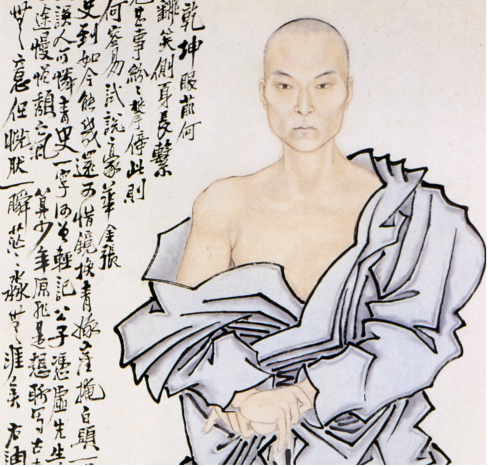
Contextual Frameworks in Research of the Chinese Art of 1838–1948
> Autumn 2016
Image (cropped): Ren Xiong, Self-portrait, hanging scroll, ink and colours on paper, Palace Museum, Beijing -
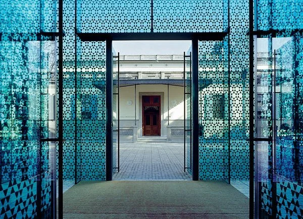
Discovering Chinese Collections in the Museum Rietberg
> Spring 2016
Co-teaching
Image: Museum Rietberg
Excursions >
-
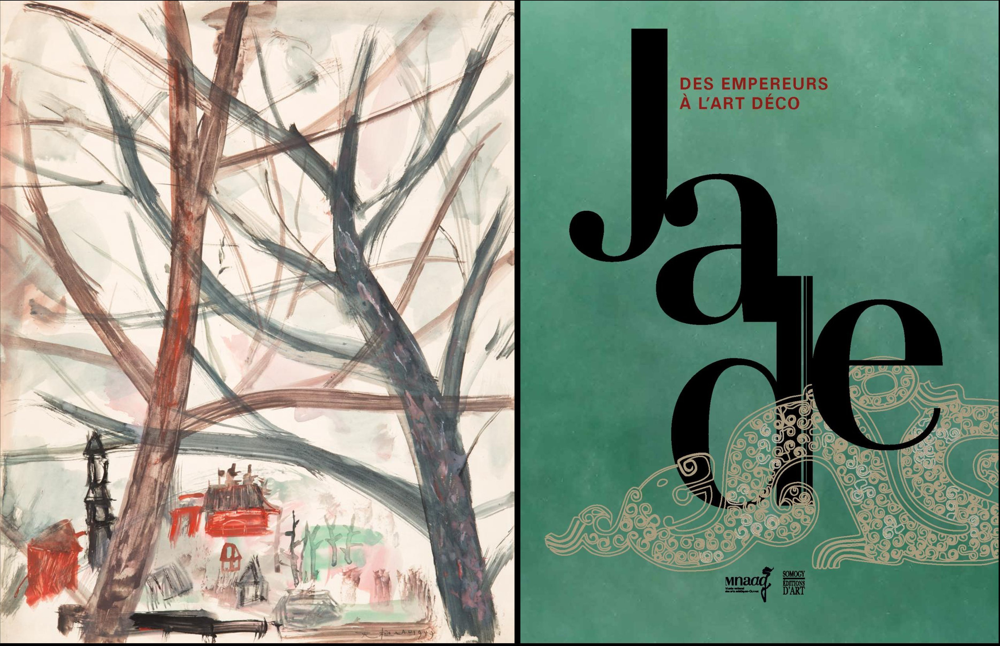
Chinese Modern Art in Paris
> Autumn 2016
Co-teaching
Musée Cernuschi — viewing paintings from the collection with Maël Bellec (curator of Chinese and Korean arts) and visiting the exhibition “Zao Wou-Ki”.
Musée Guimet — visiting the exhibition “Jade, from the emperors to art déco”.
Image (left): Zao Wou-Ki 趙無極 (1920–2013), Untitled, 1949, aquarelle, Musée Cernuschi. (Right): cover of the catalogue of the exhibition Jade: Des Empereurs à l’Art Déco, Musée Guimet.